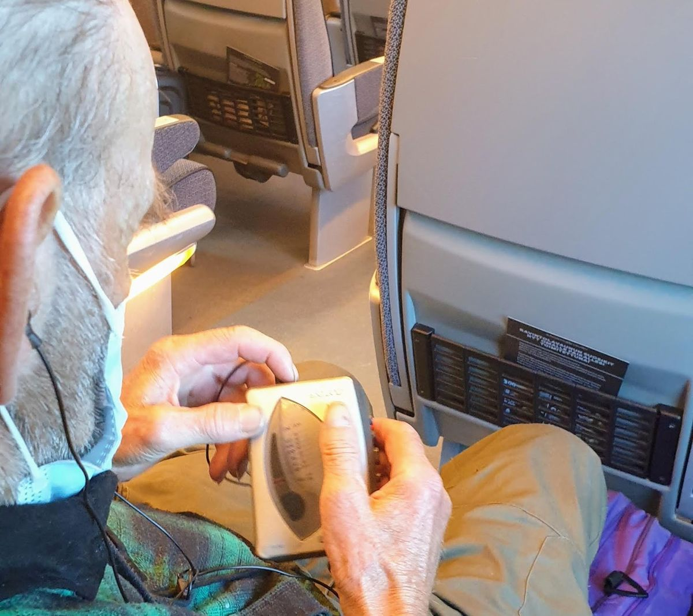
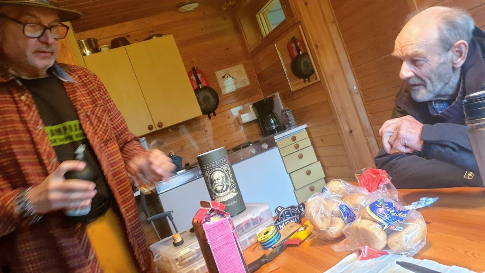
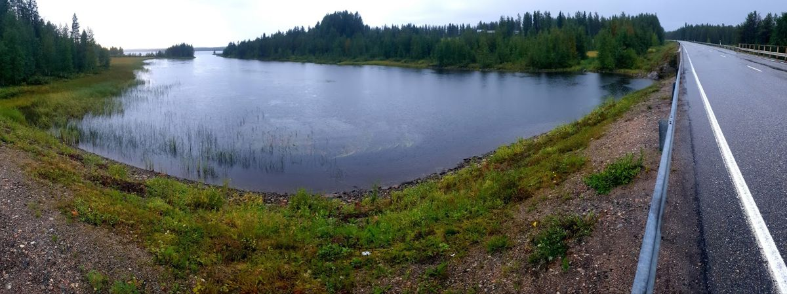
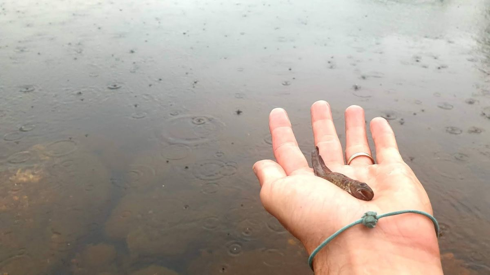
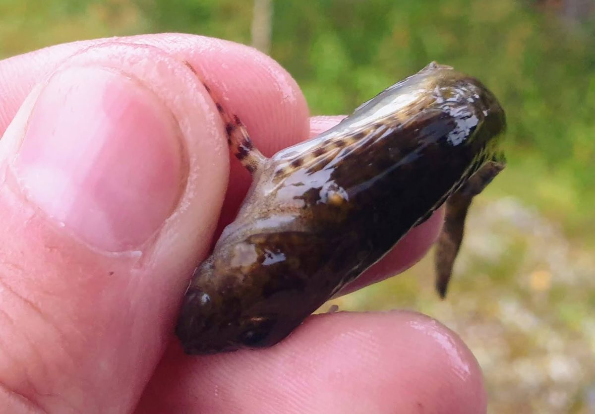
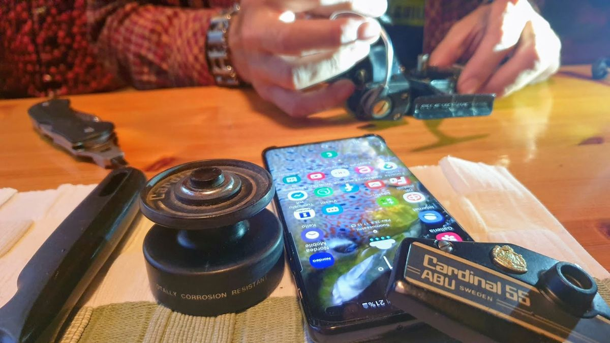

Blogitekstit · Syyskuu 2020
Lapinretki päivä 1. Venezuelaista rommia - ei kiitos

Niitä pieniä ohikiitäviä hetkiä. Muistoja. Tunteita. Tuoksuja. Yhteisiä aamuja puurolautasen äärellä, kastepisaroita varpujen lehdillä. Hedelmäsokeria, rusinoita, pähkinöitä. Kannustavia sanoja, uskoa ja toivoa.
"Kyllä poika jaksaa!"
Niin jaksoin. Pallas hotellin parkkipaikalla vietetyn yön jälkeen oli vaellusedessä. Rinkka, joka oli ollut selässäni vain kotiovelta bussiin ja bussista toiseen pitäisi nyt nostaa selkään ja lähteä tunturiin. Edessä viikko ja Pallas-Hetta vaellusreitti.
Näistä hetkistä se alkoi, kaipuu lappiin vuonna 1991. Olin tuolloin yksitoista ja porukan nuorin.
Menneistä hetkistä on kulunut nyt 29 vuotta. Siihen väliin on isälleni mahtunut minun perheen perustaminen ja esikoiseni, siskoni neljä lasta, yksi lapsen lapsi, satoja nokipannukahveja ja muutama muu juttu jotka jätetään mainitsematta.
En tiedä oliko kohtalolla kätensä pelissä, kun heinäkuisella lapinreissulla jäin ilman rautua, harjusta ja kirjoeväsimppua. Oliko se suunnitellut tämän menevän juuri näin?


Tätä kirjoittaessani isäni korviin Radio Suomen sulosäveliä soittaa vanha Sony Walkman, klassikko jonka kasettidekissä on kuunneltu ysärillä kovimpia klassikoita minun ja siskoni toimesta.
Walkman, kävelevä mies aivan kuten isäni. Tästä alkaa seikkailu kohti uusia muistoja.
Jyväskylän rautatieaseman taksitolpalla odotti bemari ja sen oviaukolla tervehti Juha Orava, alias Kojamoäijä. Tutustuin häneen Riihimäen Erämessuilla vuonna 2018 ja olen siitä asti vieraillut usein hänen luonaan Vaajakoskella. Kalastus yhdisti meidät, kuten monet muutkin hienot ihmiset.
Tankatessamme soittelin Kylmäluoman retkeilykeskukseen ja varasin meille mökin yöpaikaksi.
Ensimmäinen etappisiirtymä oli Siilinjärvelle, jossa mahalaukkumme täydentyi Shellillä lounaalla. Siitä matka jatkui Kajaaniin ja Motonettiin.
Kahluuhousut Juhalle ja samalla moikkasin viereisessä liiketilassa Rustan uutta tavarataloa rakentavia työkavereita Mikaa ja Tommya.
Uhkaavat pilvet ympäröivät meidät ja hetkeä myöhemmin olimme ukkosrintaman keskellä. Vettä tuli kuin saavista kaatamalla eikä usko illan lirkkireissulle pääsyyn ollut kova. Bemarin mittari näytti ulkona olevan vain -40 astetta pakkasta.
"Suosittelisin sua hankkimaan BMW:n - se tekee elämästä ainakin mielenkiintoisen"
Myrskyn jälkeen on aina poutasää, niin nytkin. Upea sateenkaari maalasi kaarensa väriloiston horisonttiin ja seuraili meitö hei Kylmäluoman rerkeilykeskukselle asti.
Keltasirkku oli mökkimme nimi. Kannoimme tavarat sisään ja istahdin tuvan pöydän ääreen. Terassilla isäni poltti tupakkia ja nautti edessä siintävän lammen tyynestä pinnasta.


Kaima kaivoi laukustaan Venezuelaista rommia, ei kiitos vastasin. Isäni otti ja nautti.
"Lämmittipä se kivasti."
Laitoin lisää vaatetta päälleni, kaivoin lirkkilaukun ja kahluuhousut mukaani. Oli aika mennä kirjoeväsimppujahtiin jo ennen pimeää.


Myrkyn jälkeen on poutasää, olihan se hetken. Sain auton parkkiin valtatie E63 varteen ja kävelin Google mapsista katsomani sillan luokse. Tahtotila oli päästä sateensuojaan sillan alle, mutta tällä sillalla se ei ollut mahdollista.
Viritin silti lirkkiin Onkitukusta haetun pinkietoukan ja lähdin systemaattisesti käymään kivenkoloja läpi. Ensimmäinen penkan reuna ei tuonut tärppejä, mutta heti seuraavalla rannalla kolosta nousi kuvattavaksi pieni made.


Seuraava kolo ja tärppi. Kivisimppujen kalastuksesta oppineena tiesin, että uusi tärppi tulee varmasti jos malttaa mielensä ja yrittää samaa koloa uudestaan.
Valkoinen pinkie sujahti kivenkoloon, muutama varovainen nypytys. Vastaisku. Ja haaviin sujahti simppu. Yltyvä vesisade pakotti ottamaan kalan mukaan ja siirtymään auton takakontin luukun alle suojaan.


Kala käteen ja evät erilleen. Nysä se reunimmainen on, kuvan evistä lähetin tiimiläisilleni, Juusolle ja Miikalle.
Nopeasti tuli raadin tuomio: On se kirjoeväsimppu.
Kamat autoon ja takaisin mökille. Märkänä, mutta onnellisena onnistumisesta astuin kuistille kertoen loppu seurueelle jahtini onnistumisesta.


Loppu ilta meni Juhan juttuja kuunnellessa ja Abun keloja säätäessä.
Hauska yksityiskohta oli puhelimeni kalenterihälytys: Kirjoeväsimppu.
Kello oli 20.00, olin saanut simpun 52 minuuttia aikaisemmin. Oli aika hyvin suunniteltu täsmäisku.
Väsyneenä matkustuksesta ja sateessa kalastamisesta oli hyvä mennä nukkumaan niin, että ensimmäinen tavoitelajipiste oli saatu. Aamulla jatkuisi matka kohti pohjoista ja Inarinjärveä.
Linkki päivä 2